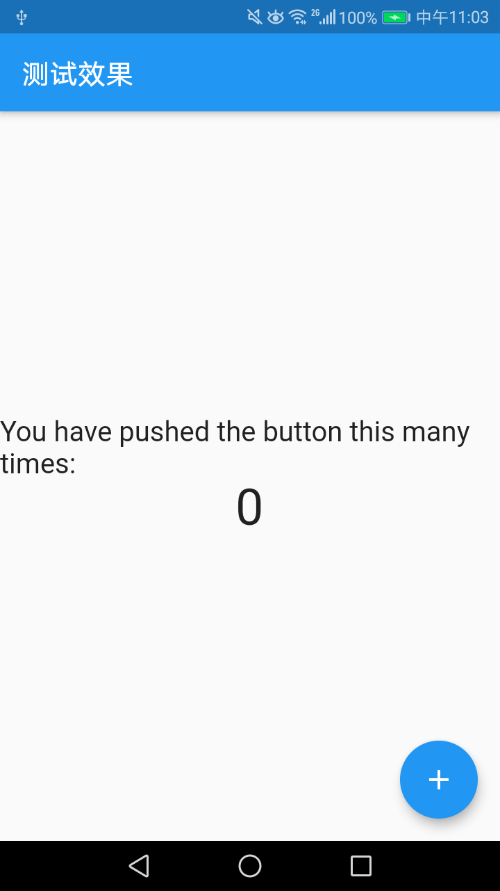
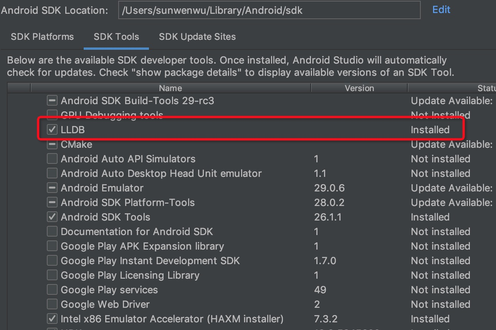
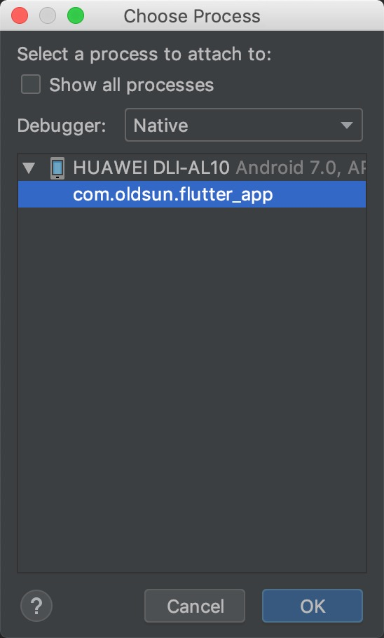
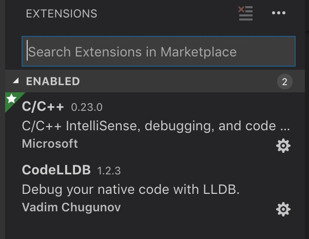
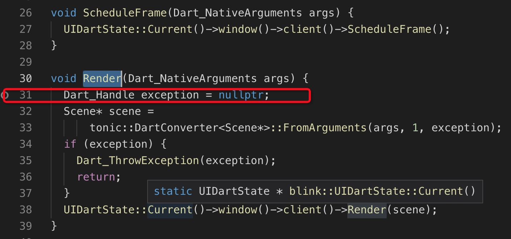
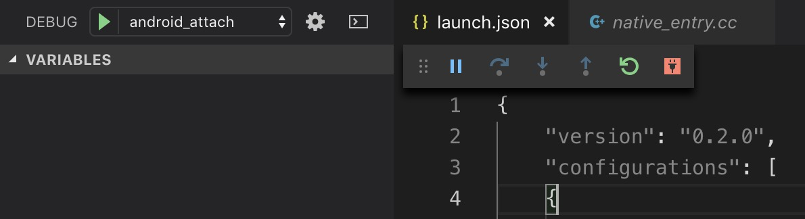
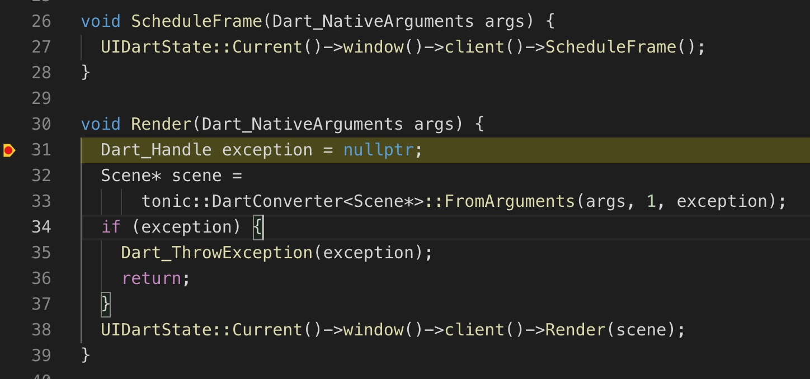

Flutter Engine源码调试
之前进行了一些Flutter应用开发，了解了framework层面的渲染原理。发现Flutter不仅可以进行界面开发，还可以做很多其它的事情，但是这要求对于Flutter Engine的源码非常熟悉，最终对其进行修改。
Flutter Engine源码太多了，而且有很多第三方库，光下载源码以及依赖包就用了几个小时，总计有8G多。如果想要通过代码跟踪，很容易就缺失了相关内容，因此我选择对Flutter Engine源码进行调试，这种方式来熟悉代码。
Flutter Engine源码编译
源码下载
Flutter相关源码下载参考： https://github.com/flutter/flutter/wiki/Setting-up-the-Engine-development-environment
注意：很多第三方代码托管在chromium.googlesource.com、fuchsia.googlesource.com、skia.googlesource.com等域名下，下载过程中需要开启git代理以及http、https代理服务。
编译过程
下载过程时间很长，根据网络情况不同，大概需要几十分钟到几个小时不等。
检出对应版本
首先获取当前Flutter版本的提交信息
1 | cat /Users/sunwenwu/flutter/bin/internal/engine.version # 当前使用的flutter目录 |
得到提交信息 4737fc5cd89b8f0136e927b00f2e159444b95a73
然后将源码同步到指定的提交记录上：
1 | cd /Users/sunwenwu/flutter_engine/engine/src/flutter # 下载后的Flutter Engine源码位置 |
编译Android arm Debug默认版本
1 | cd /Users/sunwenwu/flutter_engine/engine/src |
其中--android-cpu可以省略，默认就是arm格式，同时默认编译debug版本。
编译过程大概需要30分钟，每一步都需要十五分钟左右。编译完成后会生成out/android_debug_unopt与out/host_debug_unopt两个目录。到现在为止，编译过程已经完成。
Flutter Engine源码调试
使用编译后Flutter启动Flutter应用
调试过程需要界面触发跟踪，因此我们还要准备一个Flutter工程。因为我们新编译的Flutter版本与原来的Flutter版本一致，所以可以直接使用原来已经创建好的Flutter项目。
我这里原来有一个比较简单的Flutter项目flutter_app，工程位置在1
2
3
4
5
6
7
8
9
10
在查看下编译好的Flutter目录（也就是android_debug_unopt目录下），可以看到有两个重要文件`flutter_java.jar`以及`libflutter.so`，这个就是Android项目中必须的两个依赖库。
下面我们设置flutter应用使用我们编译好的依赖库。
将手机通过USB线连接到PC上，开启调试模式（手机不需要ROOT）。
``` bash
cd /Users/sunwenwu/project/flutter_app/flutter_app
flutter run --local-engine-src-path=/Users/sunwenwu/flutter_engine/engine/src --local-engine=/Users/sunwenwu/flutter_engine/engine/src/out/android_debug_unopt
等待应用安装，安装完毕后，应用界面打开：

向应用中添加lldb-server
上面已经将libflutter.so加入到了应用中，如果想要调试Native代码，还需要通过lldb来实现。现在Android Studio中的调试Native代码也是这种方式来实现的。
lldb远程调试的配置方式参考：https://lldb.llvm.org/use/remote.html
按照上面文档配置后存在一个问题，就是最后挂载进程时，无法关联到我们的flutter应用进程。这个是因为系统权限限制，除非将手机ROOT，否则一直会提示attach fail
那这个问题怎么解决？其实可以将lldb-server添加到需要调试的应用中。通过run-as获取应用权限，进入应用目录下进行操作。注意，使用run-as的应用只能是debug应用，其他应用不可以使用。
- 首先确认安装lldb，在Android Studio的
SDK Manager中可以进行安装或者看到安装状态：

- 找到lldb-server所在目录位置，并将其推送到手机中
1 | cd /Users/sunwenwu/Library/Android/sdk/lldb/3.1/android/armeabi |
- 然后执行
run-as命令将lldb-server写入到指定位置下
1 | adb shell "cat /data/local/tmp/lldb-server | run-as com.oldsun.flutter_app sh -c 'cat > /data/data/com.oldsun.flutter_app/lldb-server'" |
这一步已经将lldb-server写入到了/data/data/com.oldsun.flutter_app文件夹中了
- 进入应用中，启动lldb-server
1 | adb shell |
- 在另一个终端中执行
lldb进行调试
1 | lldb |
通过Android Studio设置lldb
上面的处理过程比较麻烦，实际上也有简单的办法执行。在Android Studio中启动应用，并Attach Debugger to Android Process，选择指定的应用。

这时就会自动将lldb_server注入到应用中的/data/data/com.oldsun.flutter_app/lldb/bin/目录下。
重新使用脚本启动flutter应用，再次执行run-as com.oldsun.flutter_app，可以看到
1 | adb shell |
这时执行
1 | HWDLI-Q:/data/data/com.oldsun.flutter_app $ chmod 700 /data/data/com.oldsun.flutter_app/lldb/bin/lldb-server |
另起新的终端，执行
1 | lldb |
关联完毕。
到此调试配置已经结束。
在IDE中进行配置调试
上面的配置项已经可以调试了，但是只能通过脚本执行，缺乏可视化交互界面，我们通常情况下都是通过IDE进行的调试。
IDE可以选择Android Studio或者Visual Studio Code，相比之下，前者需要设置为特定工程，配置较复杂，我们选择VS code来进行调试。
安装相应扩展
需要安装C/C++与CodeLLDB这两个插件，正常安装即可。

导入源码
在VS Code中打开文件夹，选择Flutter Engine源码所在的目录，导入。
Configuration
VS Code中选择Debug->Open Configuration，在打开的launch.json文件中配置如下内容：
1 | { |
这里面的配置项就是上面脚本中的lldb设置，保存文件。
开始调试
在src/flutter/lib/ui/window/window.cc文件中的Render方法31行设置断点。

断点设置完成后，按F5键，开始进行调试，如下图。

手机上触发刷新界面操作，断点卡顿，等待执行

注意，上面的方式需要先设置断点再进行调试。